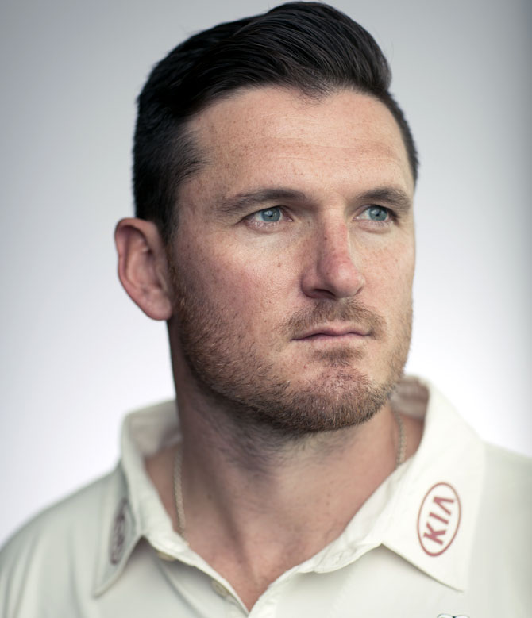

Introduction to Lord's

The ground is named after Thomas Lord, who was a professional English cricketer and playign first class cricket between 1787-1802 . It's owners are the MCC (Marlybone Cricket Club) which were founded in 1787 and were the govening body of circket up intil the ICC was established in 1909. The ICC were later administerby the the secretary of the MCC in 1909, inchwich the MCC chariman took charge until 1989.
Who plays cricket at Lord's?
A the start of every season the MCC play the reigning county champions fomr the previous season. It is the home of Middlesex County Cricket Club ans every season the ECB hosts several test matches and One-Day Internationals. Famous cricketers have played on these grounds. Sir Donald Bradman of Australia who once held the record of the highest individual score from an overseas player proudly held that record for 73 years only to be succeded by Graham Smith of South Africa in 2003 with a score of 259. The highest individual score overall was by Graham Gooch in 1990 with an impresive 333 agianst India in a Test Match.
It's not just the batsman who break the records at lords, players such as James Anderson recenlty became the all time leadign wicket taker at Lords with an astonishing 166 wickets in 26 matches. This is followed by his opening partner Stuart Broad who is jsut one shy of 100 wickets. For an over-seas player to perform consistanlty on each tour, takes alot of guts. Australia legend Glen McGrath took 26 wickets in 3 matches. Both Tim Southee and Richard Hadlee have taken 24 wickets in 5 matches for New Zealand. Then we have the great West Indian bowlers, Malcom Marshall 20 wickets in 3 matches, and Courtney Walsh 20 wickets in 4 matches.